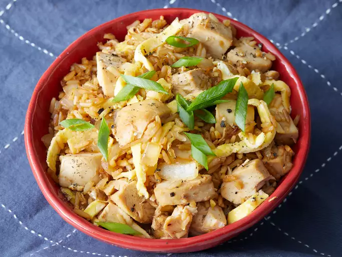

Chicken Fried Rice

Description
Chicken Fried Rice is a quick and flavorful dish made with stir-fried rice,
tender chicken pieces, vegetables, eggs, and savory sauces. It is popular for its smoky taste, colorful appearance,
and simple preparation, making it a favorite comfort food for lunch or dinner.
Ingredients
- Main Ingredients
- 2 cups cooked rice
- 200 g chicken (small pieces)
- 2 eggs
- 1 onion (chopped)
- 1 carrot (chopped)
- 1/2 cup cabbage (shredded)
- 2 cloves garlic (minced)
- 2 tbsp soy sauce
- 1 tbsp chili sauce
- 1 tsp pepper
- Salt to taste
- 2 tbsp oil
- Spring onions for garnish
Steps
- Cook the Chicken
- Heat oil in a pan.
- Add chicken pieces and cook until fully done.
- Add salt and pepper.
- Cook the Vegetables
- Add garlic and onions to the pan.
- Cook for 2 minutes.
- Add carrots and cabbage.
- Stir fry on high heat for 3-4 minutes.
- Add Eggs
- Push vegetables to one side.
- Crack eggs into the pan.
- Scramble and mix with vegetables.
- Add Rice
- Add cooked rice.
- Pour soy sauce and chili sauce.
- Mix everything well.
- Stir fry for 5 minutes.
- Serve
- Garnish with spring onions.
- Serve hot.
Home page